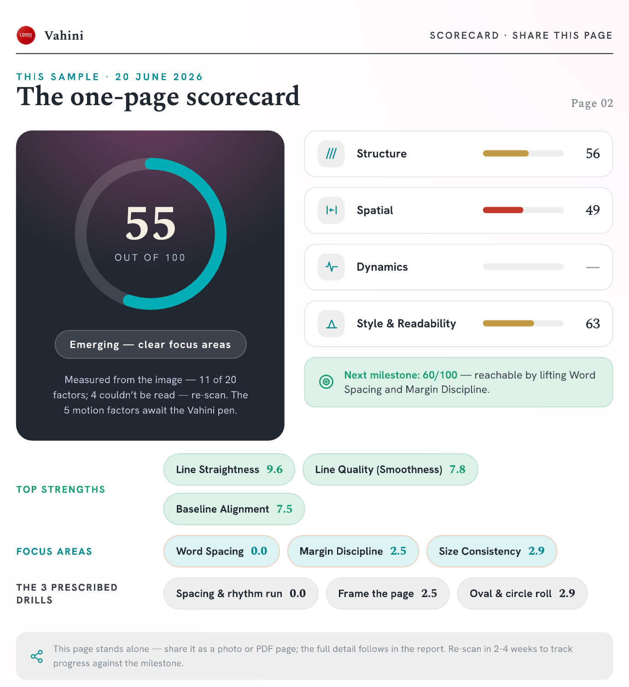

Find exactly where your handwriting breaks down.
Upload one handwritten page and get a 20-factor analysis with personalised exercises, not the same worksheet for everyone. Across five Indic scripts, in minutes.
The problem
You can see the writing is messy. You can't see why.
Untidy writing has a cause, letter formation, spacing, size consistency, baseline alignment, or speed. From the finished page alone, none of that is obvious. So practice becomes guesswork, and generic worksheets treat every writer exactly the same.
Key benefits
From “write neater” to a specific plan.
The whole hand, scored
One page graded across structure, spatial, dynamics and style, not a single subjective grade.
Plain-language fixes
A clear summary and the priority things to fix first, written for a person, not a marker.
Practice that adapts
Exercises chosen for the weak spots, that update as the writing actually improves.
Common use cases
Who it’s for
- Parents helping a child improve at home, between school terms.
- Teachers giving targeted feedback instead of generic worksheets.
- Adult writers fixing one specific weak spot in their hand.
- Coaches running structured handwriting programmes at scale.
One example
One page, one clear plan
A parent uploads a photo of their child’s homework. In under a minute the analyser returns a 55/100 scorecard: line straightness is a strength, word spacing is the weak spot.
The report prescribes three drills for the week, specific and measurable, not “just write neater.” Re-scan in a fortnight to see the number move.
How it works
Three steps, one page.
Photograph the page
Write naturally on ordinary paper, then upload a clear photo or scan. No special notebook, no app to install.
20 factors, scored
Computer vision measures the actual marks and scores 20 factors, then flags what to fix first. See all 20 →
Targeted exercises
Exercises chosen for your weak spots, that adapt as the writing improves. No more one-size-fits-all.
What you get
A factor-by-factor scorecard you can act on.
A clear scorecard with a plain-language summary, the priority fixes, and a practice set that updates as you go. Built for the individual writer who wants to actually improve, not a class report.

An actual scorecard from one uploaded page, page 2 of the full report.
It's live today, and free to try.
Scan a page and see your 20-factor breakdown. The pen adds the live motion layer later; you don't need it to start.